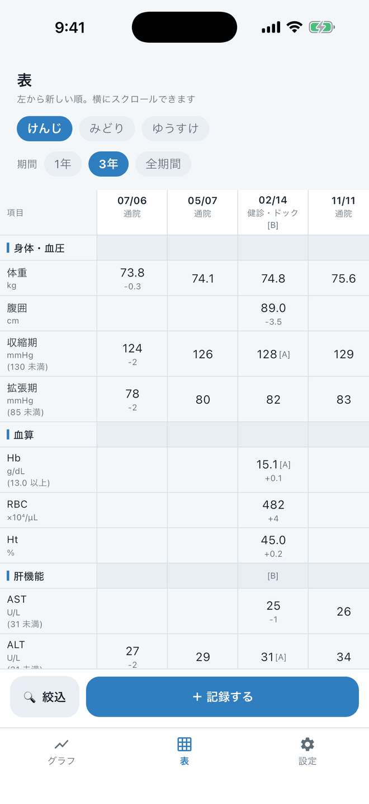
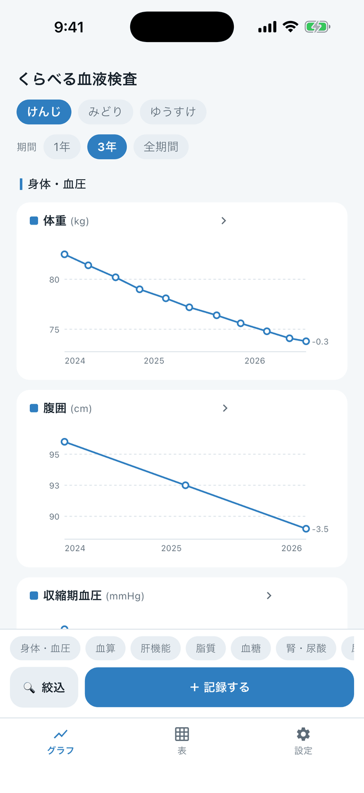
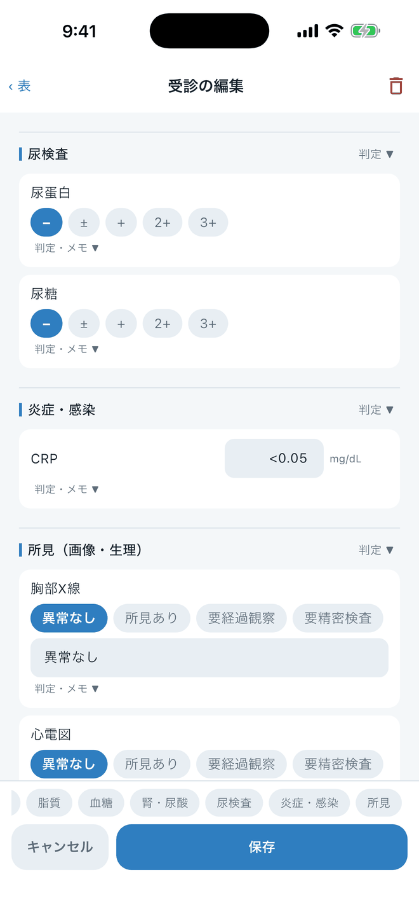
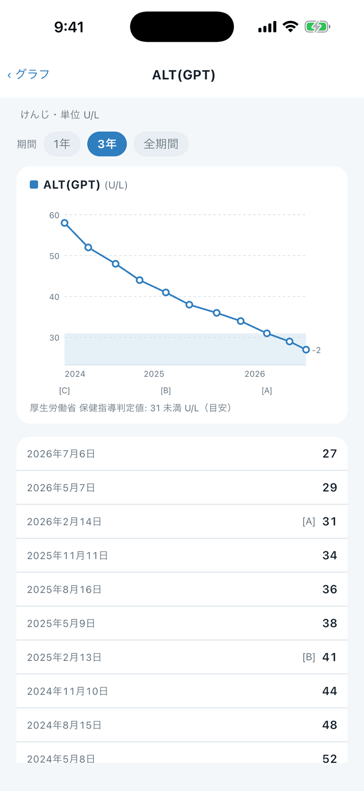

くらべる血液検査 公開準備中
検査結果を並べて見る経過グラフ。家族の分も
血液検査の結果票を、書かれている形のまま手元に残しておくためのアプリです。通院のたびに受け取る採血の結果も、年に一度の健診・人間ドックの結果も、同じ一冊に積み上げていきます。
こんな方に
- 2〜3ヶ月ごとに採血があり、前回の値とすぐ見比べたい
- 健診や人間ドックの結果票が、引き出しにたまっている
- 家族の分もまとめて手元に置いておきたい
- 診察のとき、これまでの経過をその場で医師に見せたい
画面
前回と、横に並べて見る

開いた瞬間から、経過が見えている

－・±・＋も、陰性も、＜0.05 も、そのまま

1項目だけ、大きく

日付×項目の表で、横に並べて見る
- 列が受診日、行が検査項目。左がいちばん新しい結果です
- 前回との差を、値のすぐ下に小さく表示します
- 項目名の列は固定なので、横にスクロールしても迷いません
- グループ・項目・通院／健診の種別で絞り込めます
票に書かれたまま残せる
- 数値だけでなく、－・±・＋・2＋ の記号も、陰性・陽性のような文字も、そのまま入力できます
- ＜5.0 や 0.005 のような書き方も、丸めずにそのまま保存します
- 結果票の判定欄に印字されている記号は、総合・グループ・項目の3か所に書き写せます
- 項目名・単位・並び順は、お使いの検査機関の書き方に合わせて変えられます
- よく使う約30項目は最初から入っていて、足りない項目は自由に追加できます
経過はグラフで
- 記録が2回以上ある項目は、そのまま折れ線グラフになります
- グラフをタップすると、その項目だけの大きなグラフを開けます
- 結果票に載っている基準範囲を、帯として重ねて表示できます（最初は非表示です）
家族の分も、人数の制限なく
- 受診者は何人でも登録できます。人数による課金はありません
- 表・グラフ・CSVは、いつも受診者ひとりぶんです
- 受診者を切り替えても、絞り込みと期間はそのまま引き継がれます
書き出しとバックアップは、ぜんぶ無料
- バックアップと復元は無料です。機種を変えるときは、書き出したファイルを新しい端末へ移すだけ
- CSVは受診者ごとに、画面と同じ形（1行＝項目、列＝受診日）で書き出せます
- アカウント登録はありません。データはすべて端末の中だけに保存されます
- 広告なし・サブスクリプションなし・利用状況を集める仕組みも入れていません
このアプリがしないこと
- 記録と表示のためのアプリです。医学的な判断やアドバイスは行いません
- 値そのものの評価はしません。気になる値は医師にご相談ください
料金
- 受診3回ぶんまで無料でお使いいただけます（受診者の人数、検査項目の数、書き出しに制限はありません）
- 4回目の受診を登録するときだけ、買い切りのアップグレード（一度のご購入で無制限）
- すでに保存した記録の閲覧・グラフ・表・CSV・バックアップは、無料枠を超えたあともいつでも使えます
ダウンロード
まもなく App Store で公開予定です。公開までは上のリンクは開きません。